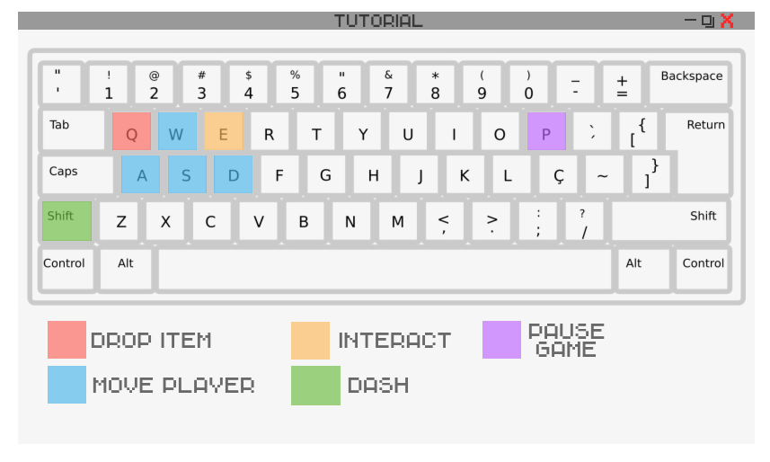

Desmotive o professor Louis Flawell e convença-o de que você merece notas justas, utilize as mecânicas e items disponíveis durante sua jogatina. O comportamento desse boss é imprevisível, não tenha certeza de tudo o que vê.
Assim como em outros jogos, Teachers Fall também possui uma história secundária. Aqui, as coisas serão um pouco diferentes:
Alguns professores vão dropar papéis. Nesses papéis, teremos um parágrafo de uma reportagem que fala sobre a pressão escolar, o bullying e o preconceito no geral. Se o player juntar todos os papéis ao término do game, terá o texto completo.
Além disso, espalhados pelo mapa do jogo, teremos monstros menores que os bosses e fáceis de derrotar, mas com uma aparência bizarra, os pixels deformados e barulhos horripilantes. Estes monstros serão a personificação do medo e da insegurança que o jogador sente.
Desmotive todos os professores a te darem notas baixas no boletim, faça isso no menor tempo possível.
Encontre todos os easter-eggs dentro do jogo, alguns estão documentados na Documentação (item especial após a primeira run).
Teachers Fall apresenta os seguintes controles destacados na imagem abaixo e descritos logo abaixo.
Tecla: E
Assim que o jogador pressionar a tecla E em algum local no qual seja possível a interação (como por exemplo em uma porta ou um personagem não jogável), uma ação será executada. Exemplos de interação:
Tecla: Shift
Assim que o jogador pressionar a tecla Shift, a ação de dash será executada.
O único final disponível por enquanto é o qual Andy (protagonista) consegue convencer Louis Flawell a desistir de arruinar seu boletim.
Todos os cheat-codes de Teachers Fall serão inseridos na versão final do jogo, sendo referência a outros jogos. Alguns cheats são realizados a partir de comando (terminal dentro do jogo) e outros a partir de uma sequência de botões no teclado.